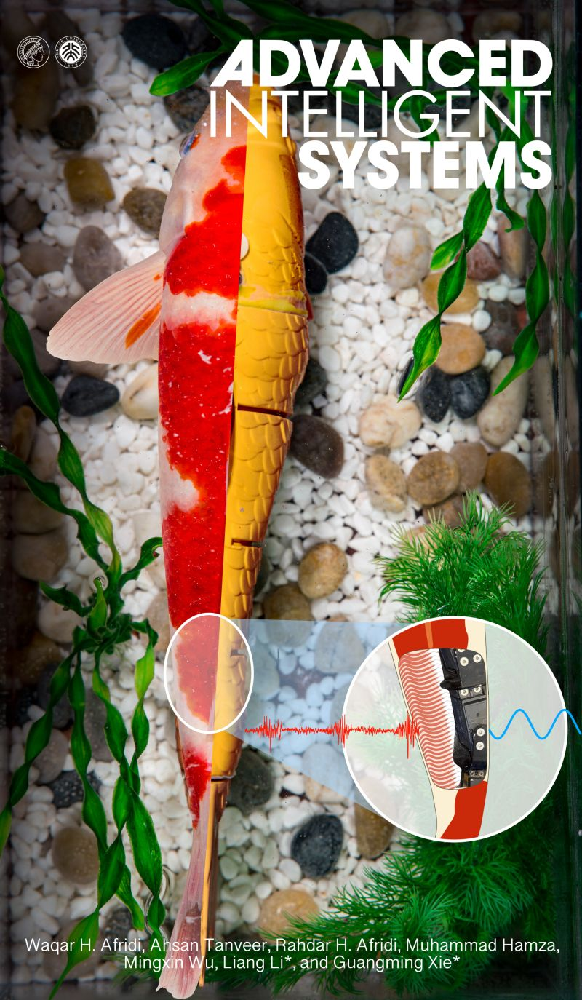
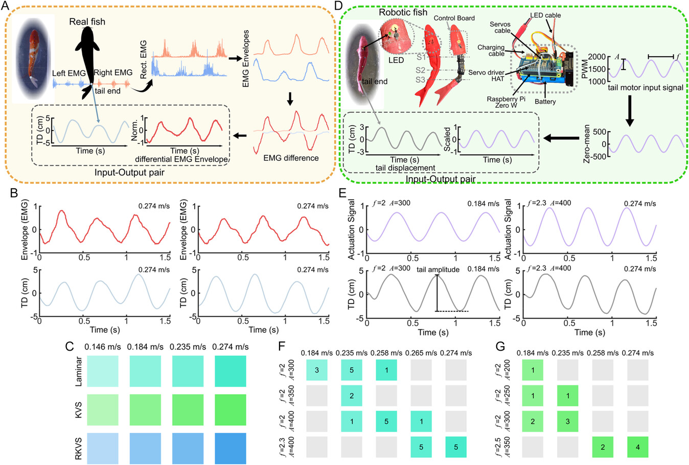
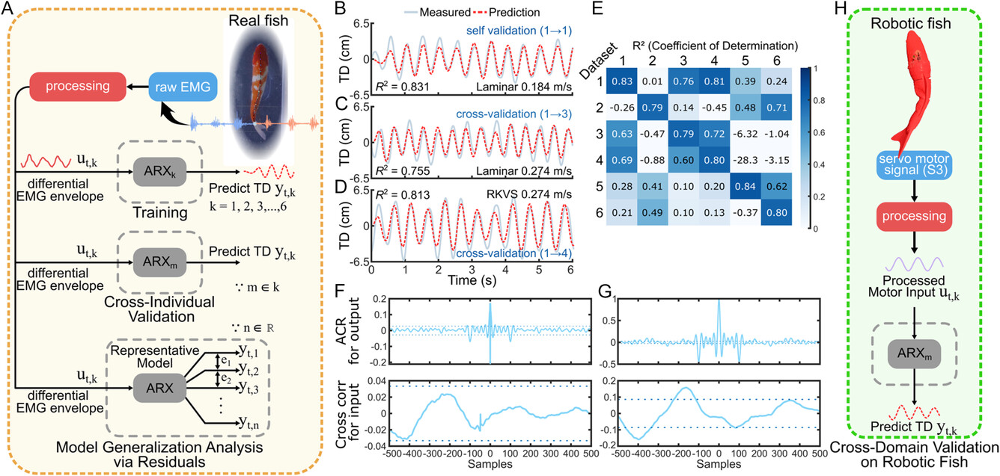
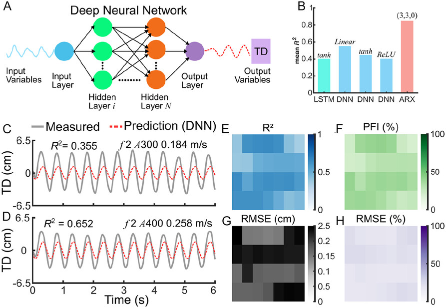

Abstract
Paper

Published in Advanced Intelligent Systems. The article reports synchronized EMG and kinematic data from freely swimming koi across laminar, Kármán vortex, and reverse Kármán vortex flow regimes, followed by zero-shot evaluation on a robotic fish.
Biological data
Bilateral caudal EMG is rectified, smoothed, differenced left-to-right, and paired with video-derived tail displacement.
Robotic transfer
Processed tail-servo PWM is used as the model input, allowing the fish-trained ARX model to predict robotic tail motion.
Interpretable Bio-to-Robot Modeling
A fish-trained ARX model connects biological muscle activity, swimming kinematics, and robotic-fish actuation through a compact interpretable mapping.
1. Signal pairing
Fish EMG envelopes and tail displacement are synchronized into input-output sequences for system identification.
2. ARX dynamics
A low-order ARX model captures temporal input-output structure while preserving interpretable delays and gains.
3. Zero-shot robot test
The same fish-trained model predicts robotic-fish tail displacement from processed PWM signals without retraining.

Signal processing pipeline
Real-fish EMG and robotic PWM are processed into comparable model inputs.

ARX validation workflow
Fish-trained ARX models are evaluated across individuals and transferred to robotic-fish trials.
Cross-Domain Generalization
Mean robotic R²
Across 42 robotic datasets, the fish-trained ARX model closely matched measured tail displacement.
Higher PFI than DNN
The ARX model substantially outperformed a deep neural-network baseline trained on the same biological datasets.
Identified delay
The fitted dynamics expose biologically meaningful timing useful for low-latency robotic control design.

Robotic-fish prediction metrics
Prediction traces and heatmaps show strong agreement across laminar and KVS operating conditions.
Why the interpretable model works
The ARX structure models shared temporal and amplitude relationships: actuation delay, proportional gain, and oscillatory response. That makes it compact, explainable, and robust to the large biological-to-robotic domain shift.
Body-size similarity also matters: groups closer to the robotic fish standard length yielded more faithful transfer, supporting the paper’s morphology-aware interpretation.
Code and Data
Citation
@article{afridi2025bio_to_robot,
title = {Bio-to-Robot Transfer of Fish Sensorimotor Dynamics via Interpretable Model},
author = {Afridi, Waqar Hussain and Tanveer, Ahsan and Afridi, Rahdar Hussain and Hamza, Muhammad and Wu, Mingxin and Li, Liang and Xie, Guangming},
journal = {Advanced Intelligent Systems},
pages = {e202501117},
year = {2025},
doi = {10.1002/aisy.202501117}
}